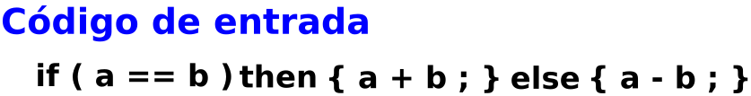

(APUNTES 5) SNCompiladores/COMapuntes5.dia
(PIZARRÓN DE CLASE 5) MiMIC/Pizarron5COM.dia
Otro método
Es un método que tiene como entrada una ER y que utiliza un árbol de análisis sintáctico, que tiene como salida un autómata AFD mínimo:
Uso de árboles
La ER se posiciona en el árbol de análisis sintáctico:
(PIZARRÓN DE DEFINICIONES 5) MiMIC/PizarronAlexicoMAD5.dia
Los estados
Los estados se presentan en forma de tabla de transiciones
| δ | a | b |
|---|---|---|
| q0 | q0 | q0 |
| q0 | q0 | q0 |
| q0 | q0 | q0 |
| q0 | q0 | q0 |
| q0 | q0 | q0 |
| q0 | q0 | q0 |
Características del lenguaje Java
Esta tabla es la que se usa para programarla.
Metodología para aplicar el método del árbol
Este algoritmo se aplica para convertir una ER en un AFD mínimo:
Analizador descendente LL(1)
Pizarrón, archivo dia: SNCompiladores/AnalisisiSintacticoEjem2.dia

La manera de construir un analizador sintáctico es, la siguiente:
Pizarrón, archivo dia: SNCompiladores/AnalisisiSintacticoEjem2GLC.dia
Pizarrón, archivo dia: SNCompiladores/AnalisisiSintacticoEjem2GLCdeterminar.dia
{kind=link}
{kind=link}